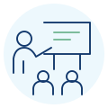

Bewuster kiezen hoe je zakelijk communiceert.
Zakelijke communicatie is doelgericht professioneel handelen. Deelnemers leren hun communicatie bewuster afstemmen op doel, ontvanger, relatie en context en oefenen met herkennen, formuleren, luisteren, afstemmen en feedback.
Zakelijk communiceren voor jouw organisatie.
Professionals en teams die hun zakelijke communicatie willen versterken.
Komt je boodschap anders over dan je bedoelt? Leveren e-mails misverstanden op, blijven afspraken na overleg onduidelijk of verloopt de afstemming met collega’s moeizaam? In deze training oefen je hoe je helder formuleert, gericht luistert en controleert of de ander je begrijpt.
Helderder communiceren en beter afstemmen.
- duidelijker spreken en schrijven, passend bij doel, ontvanger en situatie
- e-mails en andere zakelijke teksten opbouwen met een herkenbare kernboodschap
- gericht luisteren, doorvragen en controleren of de boodschap bij de ander is overgekomen zoals bedoeld
- misverstanden eerder herkennen en bespreekbaar maken
- concrete afspraken en passende vervolgstappen formuleren
- gerichte feedback geven en ontvangen en daarmee de eigen communicatie bijstellen
Zakelijk communiceren in beeld.
Bekijk wat de training Zakelijk communiceren inhoudt.
Vijf domeinen vormen de kern van de ontwikkelmeting.
De training en digitale kennisbronnen bestrijken professionele communicatie in verschillende vormen. Aanvullende kennisbronnen verdiepen onder meer professioneel schrijven, corresponderen, presenteren en communiceren in crisissituaties.
Van basis naar bewust communicatiegedrag.
Oefenen met een trainingsacteur
De trainingsacteur is standaard onderdeel van de uitvoering. Deelnemers oefenen herkenbare zakelijke communicatiesituaties, proberen gedrag uit, ontvangen directe feedback en kunnen dezelfde situatie opnieuw uitvoeren met een aangepaste aanpak.
Voorbereiden, oefenen, afronden en blijven terugkijken.
De ELO ondersteunt iedere fase van de training en blijft na deelname standaard één jaar toegankelijk voor ondersteuning in het werk.
Voorbereiding
Deelnemers krijgen toegang tot de ELO, bereiden zich inhoudelijk voor en vullen de ontwikkelgerichte nulmeting in.

Uitvoering
Digitale leermiddelen, bronnen en opdrachten ondersteunen toepassen, oefenen, feedback en reflectie.
Afronding
De eindmeting ondersteunt reflectie. De vergelijking met de nulmeting levert input voor de effectmetingsrapportage en evaluatie.
1 jaar ondersteuning in het werk
Kennisbronnen, modellen en hulpmiddelen blijven beschikbaar om in het werk opnieuw te raadplegen.
Een complete trainingsroute.
Incompanytraining
Een training voor de afgesproken groep, met actieve oefening, feedback en vertaling naar herkenbare werksituaties.
Digitale leeromgeving
Voorbereiding, digitale leermiddelen, nul- en eindmeting en standaard één jaar toegang voor ondersteuning in het werk.
Effectmetingsrapportage
Een groepsgerichte rapportage over veranderingen in zelfinschatting van kennis en vaardigheden, als input voor evaluatie met de opdrachtgever.
Zakelijk communiceren inzetten binnen jouw organisatie?
We bespreken de ontwikkelvraag, doelgroep en werksituaties en kijken of de standaardtraining passend is.